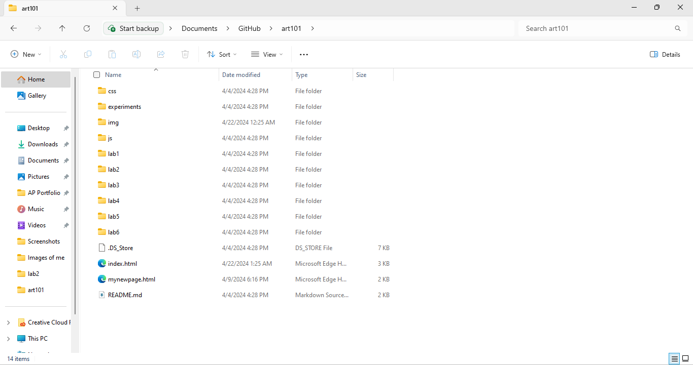
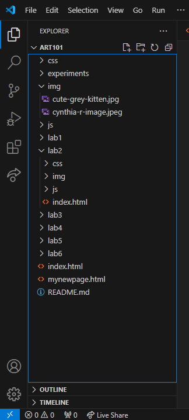
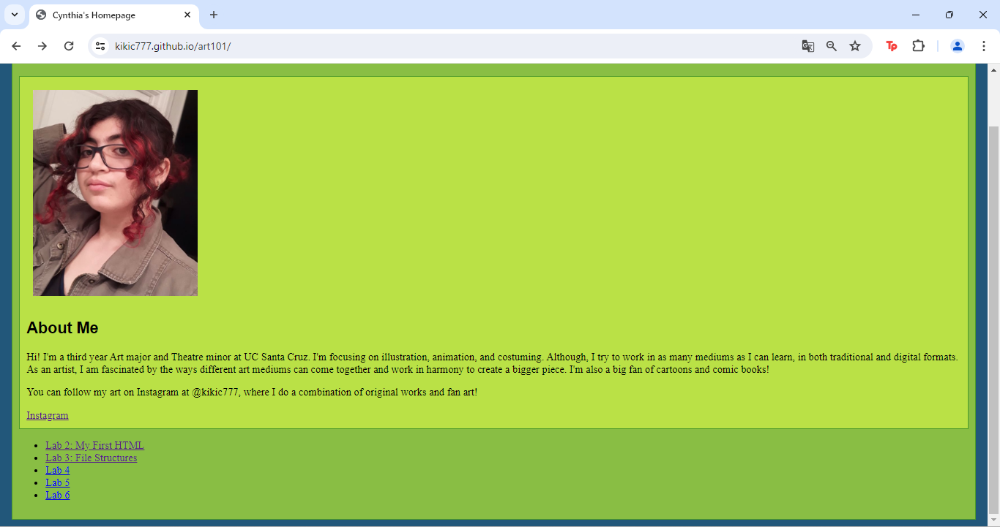
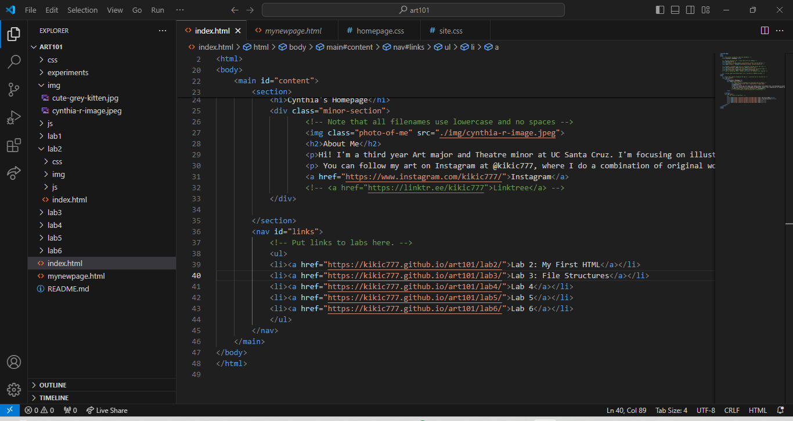
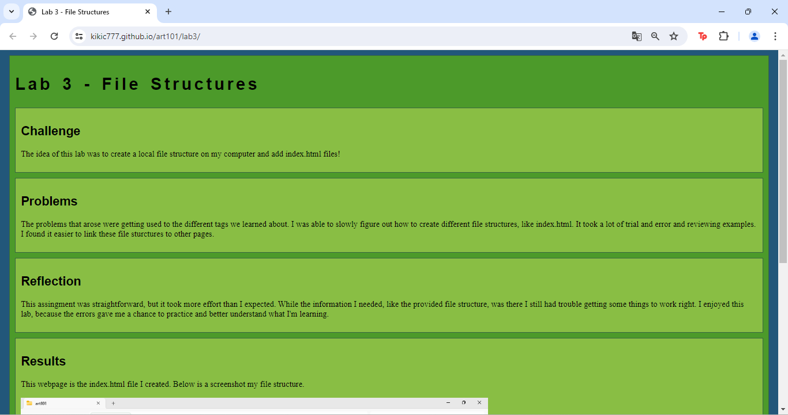
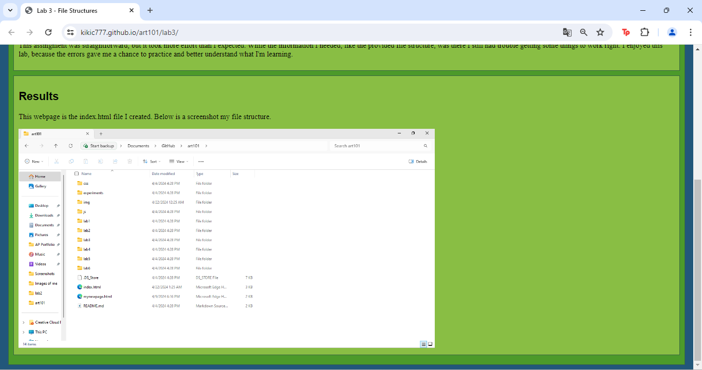
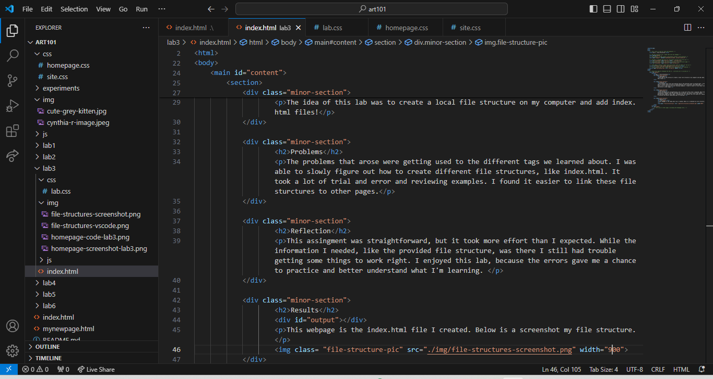

Lab 3 - File Structures
Challenge
The idea of this lab was to create a local file structure on my computer and add index.html files!
Problems
The problems that arose were getting used to the different tags we learned about. I was able to slowly figure out how to create different file structures, like index.html. It took a lot of trial and error and reviewing examples. I found it easier to link these file sturctures to other pages.
Reflection
This assingment was straightforward, but it took more effort than I expected. While the information I needed, like the provided file structure, was there I still had trouble getting some things to work right. I enjoyed this lab, because the errors gave me a chance to practice and better understand what I'm learning.
Results
This webpage is the index.html file I created. Below is a screenshot my file structure.
Below is a screenshot of my file structure on VS Code.
Below is a screenshot of my homepage with the links to my labs.
Below is a screenshot of my homepage's code on VS Code.
Below is are screenshots of my Lab 3 webpage.
 Below is a screenshot of my Lab 3 code on VS Code.
